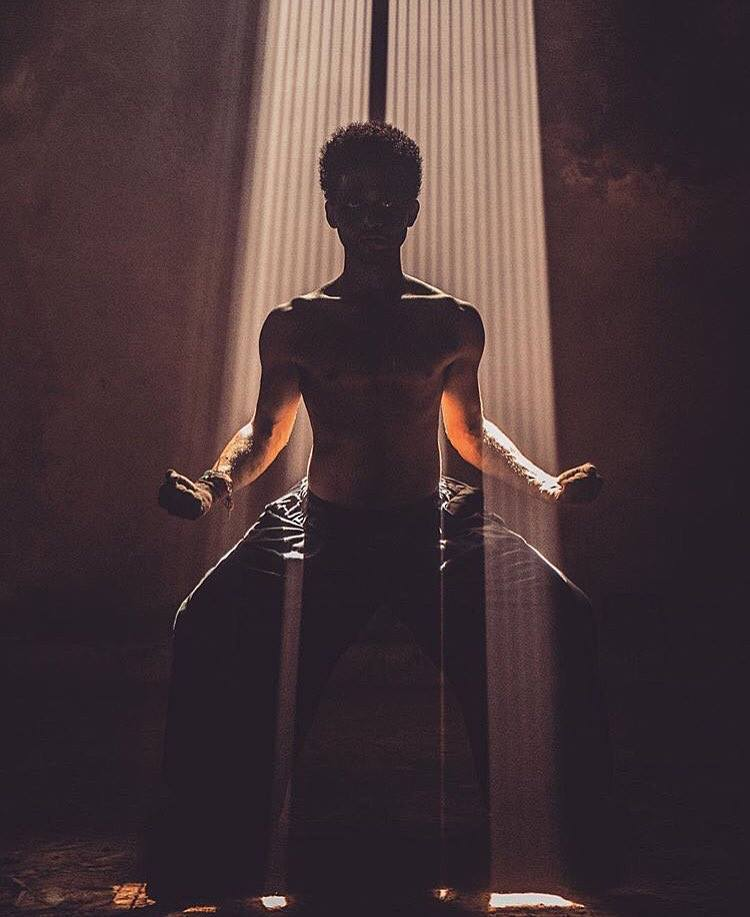
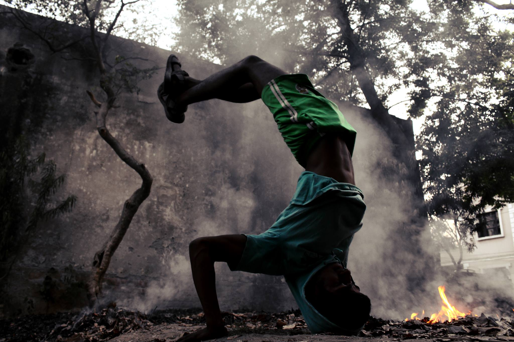
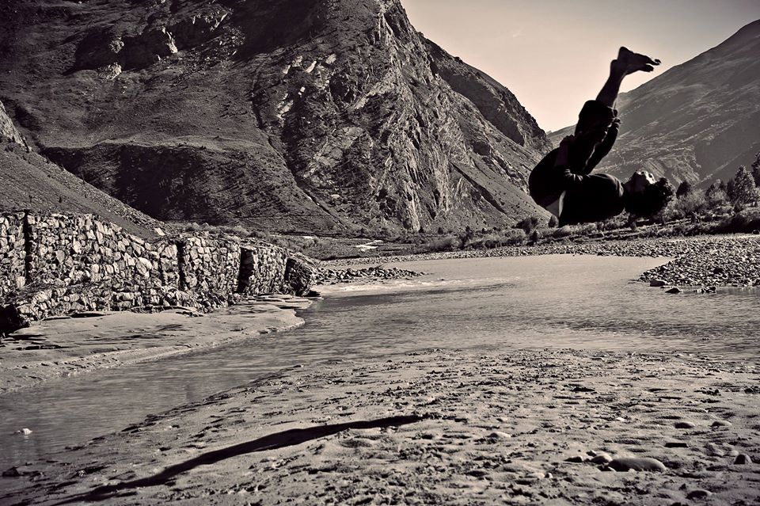
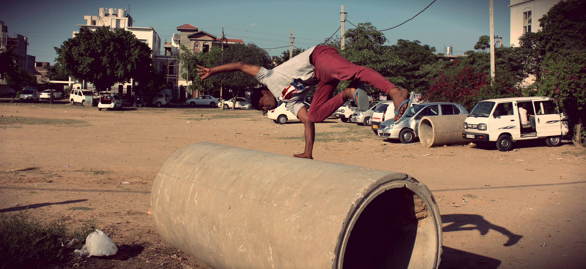
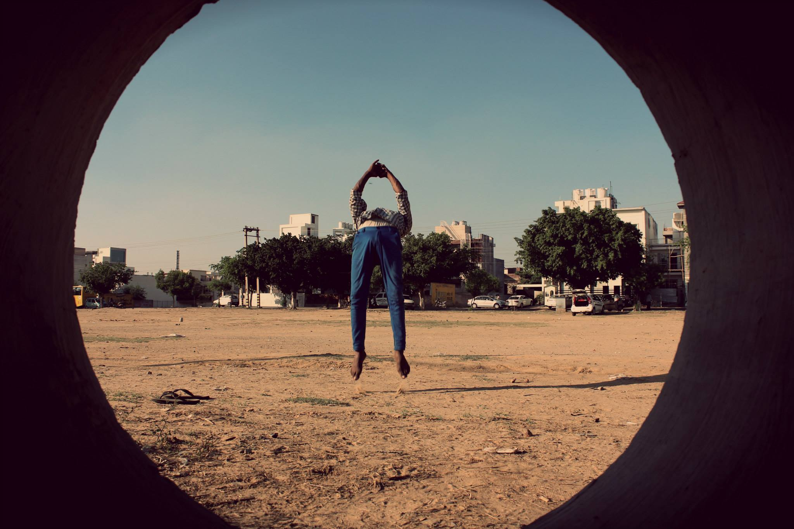
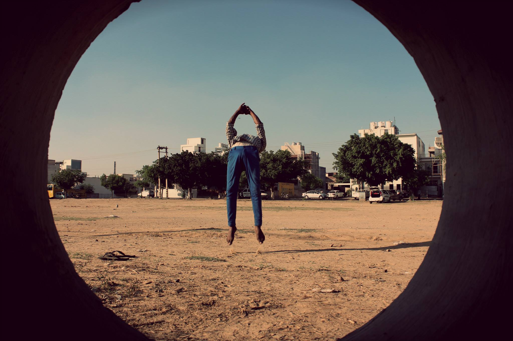

TopRock is a New Delhi based dance crew started by Varun Vig in 2011. India is a very diverse country and his home to people from several different stratas of life. While you get a glimps of the glits and glamour of Delhi and Mumbai you also see the steep contrast in regard with the people who are struggling for the bare minimum. Hip hop focuses of unity and bridging the social and sociatal gap through art, music and dance. That is the inspiration for TopRock Crew.
Hip Hop has 5 main elements that are Graffiti, Breakdancing, Emceeing, Deejaying and the fifth element being knowledge. These elements comined together has formed a culture where people can express themselves and their art.




 
